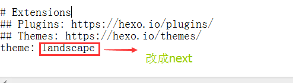
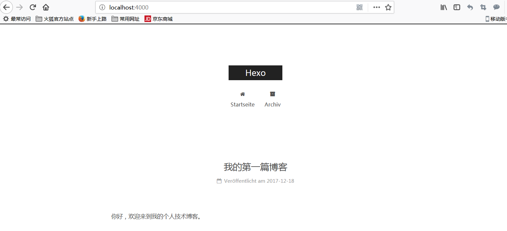
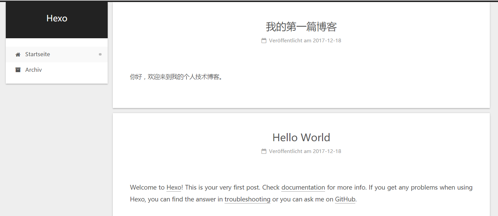
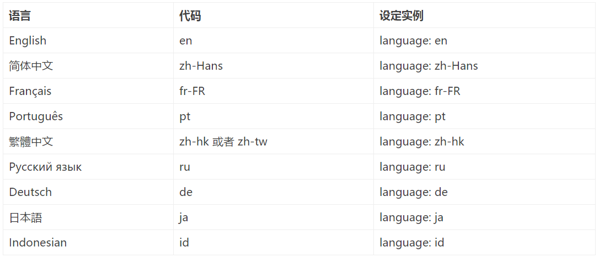
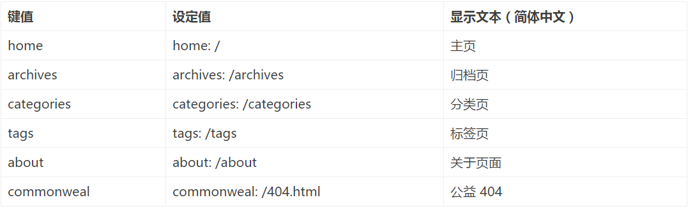
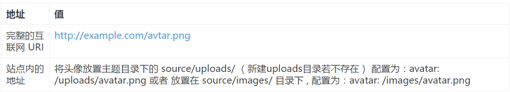
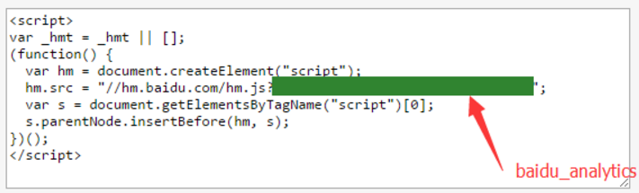

什么是 Hexo？
Hexo 是一个快速、简洁且高效的博客框架。Hexo 使用 Markdown（或其他渲染引擎）解析文章，在几秒内，即可利用靓丽的主题生成静态网页。
搭建步骤
- 搭建环境准备（包括node.js和git环境，gitHub账户的配置）
- 安装Hexo
- 配置Hexo
- 怎样将Hexo与github page 联系起来
- 怎样发布文章
- 主题 推荐
- 主题Net的简单配置
- 添加sitemap和feed插件
- 添加404 公益页面
前提条件(环境准备)
- nodejs环境配置
- git环境配置
- github帐号注册
配置Node.js环境
下载Node.js：nodejs链接，根据你自己的操作系统下载相应的安装包。
注意：windows XP是安装不了的。如图所示：
保持默认设置即可，一路Next，安装很快就结束了。
检查一下是不是要求的组件都安装好了，同时按下Win和R，打开运行窗口：

在新打开的窗口中输入cmd，敲击回车，打开命令行界面。（下文将直接用打开命令行来表示以上操作，记住哦~）
在打开的命令行界面中，输入1
2node -v
npm -v
说明：上面命令的意思的得到node和npm的版本号
如果结果如下图所示，则说明安装正确，可以进行下一步了，如果不正确，则需要回头检查自己的安装过程。

配置git环境
下载Git安装文件：GIt官网下载地址,根据自己的操作系统选择安装包。
然后就进入了Git的安装界面，如图：

和Node.js一样，大部分设置都只需要保持默认，但是出于我们操作方便考虑，建议PATH选项按照下图选择：
Git PATH设置

这是对上图的解释，不需要了解请直接跳过 Git的默认设置下，出于安全考虑，只有在Git Bash中才能进行Git的相关操作。按照上图进行的选择，将会使得Git安装程序在系统PATH中加入Git的相关路径，使得你可以在CMD界面下调用Git，不用打开Git Bash了。
一样的，我们来检查一下Git是不是安装正确了，打开命令行，输入：1
git --version
如果结果如下图所示，则说明安装正确，可以进行下一步了，如果不正确，则需要回头检查自己的安装过程。

github账户的注册和配置
如果已经拥有账号，请跳过此步~
第一步: Github注册
打开github ，在下图的框中，分别输入自己的用户名，邮箱，密码。

点击创建按钮，进入到第二步，选择无限的免费的仓库，当然了，你也可以选择无限的付费的库

选择继续，然后前往自己刚才填写的邮箱，点开Github发送给你的注册确认信，确认注册，结束注册流程。
一定要确认注册，否则无法使用gh-pages！
第二步: 创建代码库
登陆之后，点击页面右上角的加号，选择New repository：

新建代码库
进入代码库创建页面：
在Repository name下填写yourname.github.io，Description (optional)下填写一些简单的描述（不写也没有关系），如图所示：

注意：比如我的github名称是gouhongren ,这里你就填 gouhongren.github.io,如果你的名字是zhangsan，那你就填 zhangsan.github.io
第三步: 代码库设置
正确创建之后，你将会看到如下界面：

接下来开启gh-pages功能，点击界面右侧的Settings，你将会打开这个库的setting页面，向下拖动，直到看见GitHub Pages，如图：


点击Choose a theme，随意选择一个主题，点击select theme。

Github将会自动替你创建出一个gh-pages的页面。选择Commit changes。

如果你的配置没有问题，那么大约15分钟之后，yourname.github.io这个网址就可以正常访问了~ 如果yourname.github.io已经可以正常访问了，那么Github一侧的配置已经全部结束了。
到此搭建hexo博客的相关环境配置已经完成，下面开始讲解Hexo的相关配置
安装Hexo
在自己认为合适的地方创建一个文件夹，这里我在桌面新建一个文件夹hexo；打开文件夹，右键选择Git Brash Here，如下图所示：

在命令行中输入：1
npm install hexo -g
意思是通过nodejs的包管理组件npm在全局安装hexo（hexo是nodejs环境下的一个功能模块）
然后你会看到

可能你会看到一个WARN，但是不用担心， 在命令行中输入：1
hexo -v
如果你看到了如图文字，则说明已经安装成功了。

hexo的相关配置
初始化Hexo
接着上面的操作，输入：1
hexo init
然后输入：1
npm install
之后npm将会自动安装你需要的组件，只需要等待npm操作即可。
首次体验Hexo
继续操作，同样是在命令行中，输入：1
hexo g
然后输入：1
hexo s
然后会提示：
INFO Hexo is running at http://0.0.0.0:4000/. Press Ctrl+C to stop.
在浏览器中打开http://localhost:4000/，你将会看到:

到目前为止，Hexo在本地的配置已经全都结束了。
下面会讲解怎样将Hexo与github page 联系起来
怎样将Hexo与github page 联系起来
大概分为以下几步
- 配置git个人信息
- 配置Deployment
- 写博客、发布文章
配置git个人信息
如果你之前已经配置好git个人信息，请跳过这一个 步骤，直接来到
设置Git的user name和email：(如果是第一次的话)
1
2git config --global user.name "gouhongren"
git config --global user.email "gouhongren@163.com"生成密钥
1
ssh-keygen -t rsa -C "gouhongren@163.com"
一路Enter过来就好，待秘钥生成完毕，会得到两个文件id_rsa和id_rsa.pub，用带格式的记事本打开id_rsa.pub，Ctrl + a，ctrl+c复制里面的所有内容
- github配置ssh key
然后进入github首页，点击右上角的小图标，选择setting，如图所示

进入下一个页面，选择SSH and GPK keys然后选择New SSH keys，如图：

进入下一个页面，title随便取名，key来自于前面id_rsa.pub里面的内容，点击Add SSH keys

如果显示如下页面表示添加ssh key成功

配置Deployment
在项目hexo文件夹的根目录找到_config.yml,打开它在文本结尾找到deploy，然后按照如下修改：1
2
3
4deploy:
type: git
repo: https://github.com/yourname/yourname.github.io.git
branch: master
在项目hexo文件夹的根目录找到_config.yml,打开它在文本结尾找到deploy，
比如我的仓库的地址是https://github.com/gouhongren/gouhongren.github.io.git，所以配置如下1
2
3
4deploy:
type: git
repo: git@github.com:gouhongren/gouhongren.github.io.git
branch: master
写博客、发布文章
新建一篇博客，执行下面的命令：(artical title这里是你自己要写博客的名称)1
hexo new post "我的第一篇博客"

这时候在如下目录下 hexo\source\ _posts 将会看到 我的第一篇博客.md 文件
用MarDown编辑器（我使用的是HBuilder）打开就可以编辑文章了，这里需要了解一些基本的markdown写法，参考：点击我 ，很简单吧。

我们写下：1
你好，欢迎来到我的个人技术博客。
如图：

文章编辑好之后，运行生成、部署命令：
1 | hexo g // 生成 |
在浏览器中输入：localhost:4000,就会看到：

那么如何把写的博客部署到远程仓库呢？只需要执行一条命令1
hexo deploy #可以简写成hexo d
当然你也可以执行下面的命令，相当于生成和部署一步完成1
hexo d -g #在部署前先生成
如果有如下信息：
ERROR Deployer not found: git
需要用包管理器安装一个组件，如下：1
npm install hexo-deployer-git -save
然后再次部署成功1
2hexo clean #清除本地生成的文件夹
hexo g -d #生成和部署
然后访问gouhongren.github.io就可以看到如下页面，表示远程部署成功
NexT主题的配置
1、安装 NexT
Hexo 安装主题的方式非常简单，只需要将主题文件拷贝至站点目录的 themes 目录下， 然后修改下配置文件即可。具体到 NexT 来说，安装步骤如下。
下载主题
如果你熟悉 Git， 建议你使用 克隆最新版本 的方式，之后的更新可以通过 git pull 来快速更新， 而不用再次下载压缩包替换。
克隆最新版本
下载稳定版本
在终端窗口下，定位到 Hexo 站点目录下。使用 Git checkout 代码：1
2cd your-hexo-site
git clone https://github.com/iissnan/hexo-theme-next themes/next
2、启用主题
与所有 Hexo 主题启用的模式一样。 当 克隆/下载 完成后，打开 站点配置文件_config.yml， 找到 theme 字段，并将其值更改为 next。1
theme: next
如图：

到此，Next 主题安装完成。下一步我们将验证主题是否正确启用。在切换主题之后、验证之前， 我们最好使用 hexo clean 来清除 Hexo 的缓存。
注意：浏览器也可能会缓存，多刷新两遍。
3、验证主题
首先启动 Hexo 本地站点，并开启调试模式（即加上 –debug），整个命令是 hexo s –debug。 在服务启动的过程，注意观察命令行输出是否有任何异常信息，如果你碰到问题，这些信息将帮助他人更好的定位错误。 当命令行输出中提示出：
INFO Hexo is running at http://0.0.0.0:4000/. Press Ctrl+C to stop.
此时即可使用浏览器访问 http://localhost:4000 ，检查站点是否正确运行。
当你看到站点的外观与下图所示类似时即说明你已成功安装 NexT 主题。这是 NexT 默认的 Scheme —— Muse

现在，你已经成功安装并启用了 NexT 主题。下一步我们将要更改一些主题的设定，包括个性化以及集成第三方服务。
4、主题设定
选择 Scheme
Scheme 是 NexT 提供的一种特性，借助于 Scheme，NexT 为你提供多种不同的外观。同时，几乎所有的配置都可以 在 Scheme 之间共用。目前 NexT 支持三种 Scheme，他们是：
Muse - 默认 Scheme，这是 NexT 最初的版本，黑白主调，大量留白
Mist - Muse 的紧凑版本，整洁有序的单栏外观
Pisces - 双栏 Scheme，小家碧玉似的清新
Gemini -双栏Scheme，博客之间有明显的区分
Scheme 的切换通过更改 主题配置文件，搜索 scheme 关键字。 你会看到有三行 scheme 的配置，将你需用启用的 scheme 前面
注释 # 即可。 选择 Gemini Scheme1
2
3
4#scheme: Muse
#scheme: Mist
#scheme: Pisces
scheme: Gemini
如图所示：

5、设置语言
编辑 站点配置文件， 将 language 设置成你所需要的语言。建议明确设置你所需要的语言，例如选用简体中文，配置如下：1
language: zh-Hans
目前 NexT 支持的语言如以下表格所示：

6、设置 菜单
菜单配置包括三个部分，第一是菜单项（名称和链接），第二是菜单项的显示文本，第三是菜单项对应的图标。 NexT 使用的是 Font Awesome 提供的图标， Font Awesome 提供了 600+ 的图标，可以满足绝大的多数的场景，同时无须担心在 Retina 屏幕下 图标模糊的问题。
编辑主题配置文件，修改以下内容：
设定菜单内容，对应的字段是 menu。 菜单内容的设置格式是：item name: link。其中 item name 是一个名称，这个名称并不直接显示在页面上，她将用于匹配图标以及翻译。
菜单示例配置1
2
3
4
5
6
7menu:
home: /
archives: /archives
#about: /about
#categories: /categories
tags: /tags
#commonweal: /404.html
若你的站点运行在子目录中，请将链接前缀的 / 去掉 NexT 默认的菜单项有（标注 的项表示需要手动创建这个页面）：

设置菜单项的显示文本。在第一步中设置的菜单的名称并不直接用于界面上的展示。Hexo 在生成的时候将使用 这个名称查找对应的语言翻译，并提取显示文本。这些翻译文本放置在 NexT 主题目录下的 languages/{language}.yml （{language} 为你所使用的语言）。 以简体中文为例，若你需要添加一个菜单项，比如 something。那么就需要修改简体中文对应的翻译文件 languages/zh-Hans.yml，在 menu 字段下添加一项：
1 | menu: |
设定菜单项的图标，对应的字段是 menu_icons。 此设定格式是 item name: icon name，其中 item name 与上一步所配置的菜单名字对应，icon name 是 Font Awesome 图标的 名字。而 enable 可用于控制是否显示图标，你可以设置成 false 来去掉图标。 菜单图标配置示例
1 | menu_icons: |
在菜单图标开启的情况下，如果菜单项与菜单未匹配（没有设置或者无效的 Font Awesome 图标名字） 的情况下，NexT 将会使用 作为图标。
请注意键值（如 home）的大小写要严格匹配
7、 侧栏
默认情况下，侧栏仅在文章页面（拥有目录列表）时才显示，并放置于右侧位置。 可以通过修改 主题配置文件 中的 sidebar 字段来控制侧栏的行为。侧栏的设置包括两个部分，其一是侧栏的位置， 其二是侧栏显示的时机。
设置侧栏的位置，修改 sidebar.position 的值，支持的选项有：1
2left - 靠左放置
right - 靠右放置
目前仅 Pisces Scheme 支持 position 配置。影响版本5.0.0及更低版本。1
2sidebar:
position: left
设置侧栏显示的时机，修改 sidebar.display 的值，支持的选项有：
post - 默认行为，在文章页面（拥有目录列表）时显示
always - 在所有页面中都显示
hide - 在所有页面中都隐藏（可以手动展开）
remove - 完全移除1
2sidebar:
display: post
已知侧栏在 use motion: false 的情况下不会展示。 影响版本5.0.0及更低版本。
8、设置 头像
编辑 站点配置文件， 新增字段 avatar， 值设置成头像的链接地址。其中，头像的链接地址可以是：

头像设置示例:1
avatar: /images/logo-header.jpg
9、设置 作者昵称
编辑 站点配置文件， 设置 author 为你的昵称。1
author: gouhongren
10、站点描述
编辑 站点配置文件， 设置
字段为你的站点描述。站点描述可以是你喜欢的一句签名1
description: 务实求真知
添加插件
1、添加sitemap和feed插件
切换到你本地的hexo 目录，在命令行窗口，输入以下命令1
2npm install hexo-generator-feed -save
npm install hexo-generator-sitemap -save
修改_config.yml，增加以下内容
1 | # Extensions |
2、百度统计
注意： baidu_analytics 不是你的百度 id 或者 百度统计 id
- 登录 百度统计， 定位到站点的代码获取页面
- 复制 hm.js? 后面那串统计脚本 id，如：
 - 编辑 主题配置文件， 修改字段 baidu_analytics 字段，值设置成你的百度统计脚本 id。
1
2# Baidu Analytics ID
baidu_analytics: 10af06437690e7a3fb8acee3fb96af5f
再执行以下命令，部署服务端1
hexo d -g
配完之后，就可以访问 https://gouhongren.github.io/atom.xml 和 https://gouhongren.github.io/sitemap.xml ，发现这两个文件已经成功生成了。
添加404 页面
GitHub Pages有提供制作404页面的指引：Custom 404 Pages
直接在根目录下创建自己的404.html或者404.md就可以。但是自定义404页面仅对绑定顶级域名的项目才起作用，GitHub默认分配的二级域名是不起作用的，使用hexo server在本机调试也是不起作用的。
推荐使用腾讯公益404
我的404页面配置如下1
2
3
4
5
6
7
8
9
10
11
12
13
14
15
16<html>
<head>
<meta http-equiv="content-type" content="text/html;charset=utf-8;"/>
<meta http-equiv="X-UA-Compatible" content="IE=edge,chrome=1" />
<meta name="robots" content="all" />
<meta name="robots" content="index,follow"/>
</head>
<body>
<script type="text/javascript" src="https://www.qq.com/404/search_children.js"
charset="utf-8" homePageUrl="gouhongren.github.io"
homePageName="回到我的主页">
</script>
</body>
</html>
参考博客
视屏推荐
如果你觉得看博客看不太懂，推荐你看如下视屏百度云 密码：4ads